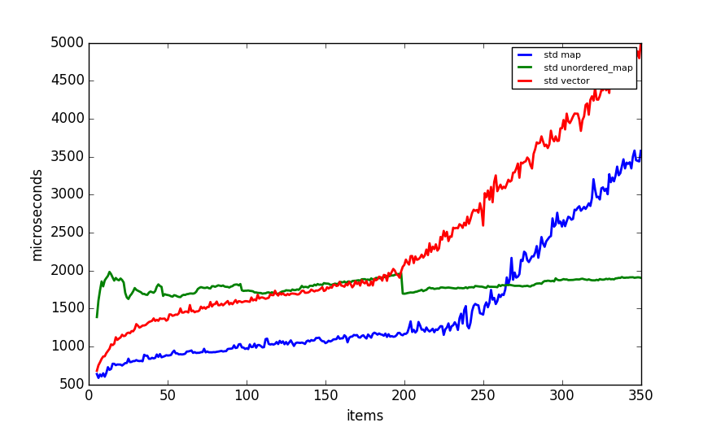
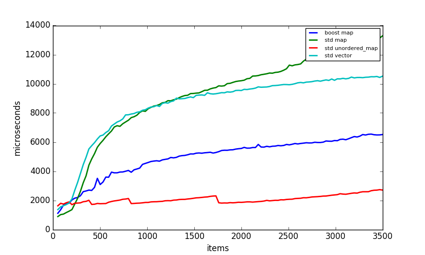
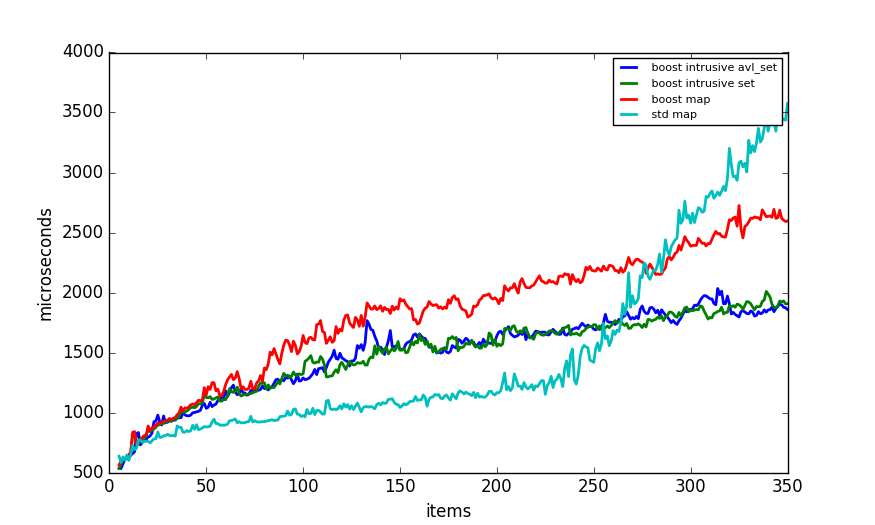
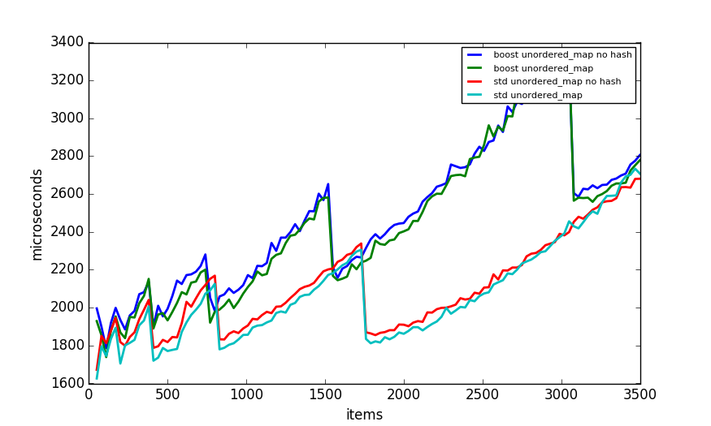
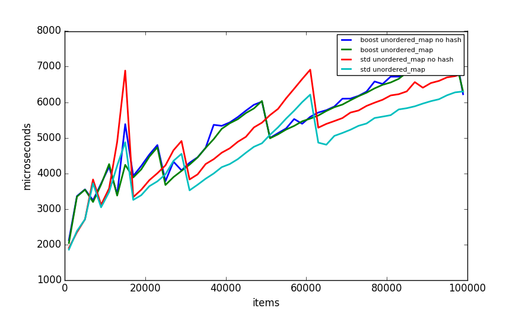
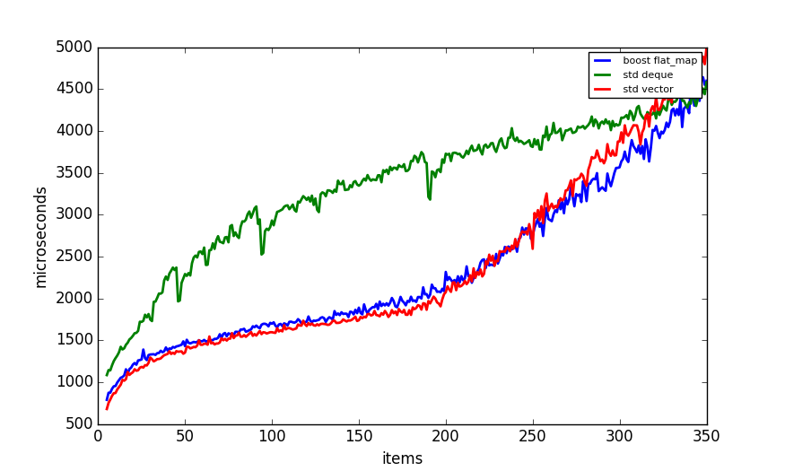
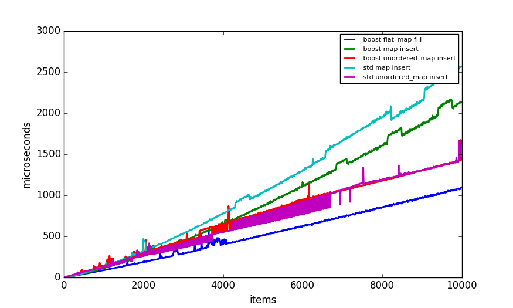

System information:
c++ compiler: /usr/bin/c++
c++ compiler version: c++ (Ubuntu 5.4.0-6ubuntu1~16.04.4) 5.4.0 20160609
compiler flags: -std=c++11 -march=native -Wall -pedantic -O3 -DNDEBUG
cpu: Intel(R) Core(TM) i3-5010U CPU @ 2.10GHz
boost: 1_58
os: Ubuntu 16.04.2 LTS
Variable number of items is added to map (number of items stored in map is the value on X axis). Then constant number of map searches is done. Number of microseconds that test takes is the value of Y axis. Key is random uint64 value.
Comparison of tree, hash and binary search structures with up to 350 elements:

Comparison of tree, hash and binary search structures with up to 3500 elements:

Comparison of tree, hash and binary search structures with up to 100000 elements:
Comparison of tree structures with up to 350 elements:

Comparison of tree structures with up to 3500 elements:

Comparison of tree structures with up to 100000 elements:

Comparison of hash table structures with up to 350 elements:

Comparison of hash table structures with up to 3500 elements:

Comparison of hash table structures with up to 100000 elements:

Comparison of binary search structures with up to 350 elements:

Comparison of binary search structures with up to 3500 elements:

Comparison of binary search structures with up to 100000 elements:

X number of items is added to map, than constant number of searches are performed. Key is a random string. String is std::string, char p is a char pointer.
Tree and hash table maps with 16 byte string keys:

Tree and hash table maps with 16 byte string keys:

Tree maps with 16 byte string keys:

Tree maps with 16 byte string keys:

Tree maps with 4 byte string keys:

Tree maps with 4 byte string keys:

hash table maps with 16 byte string keys:

hash table maps with 16 byte string keys:

hash table maps with 4 byte string keys:

hash table maps with 4 byte string keys:

X number of items are added to map. Time that takes to insert X items is on Y axis. Key is uint64 random number.

X is number of cases in switch and number of items in map. Constant number of searches is done. Y is time to complete searches.

comparison of arithmetic operations done on different data types.